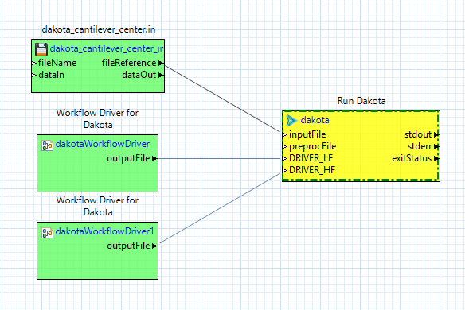

Run Dakota Using Next-Gen Workflow
You can execute Dakota via the “dakota” node in Next-Gen Workflow.

This is effectively equivalent to running dakota -i CenteredParameterStudy.in on the command-line.
The most common use case for using Next-Gen Workflow to execute a Dakota study is when Dakota’s analysis driver is itself an NGW workflow.
The Dakota node can flexibly receive additional input ports. For example, it is possible to pass pre-processor parameters to Dakota using Next-Gen Workflow by adding additional input ports to the Dakota node.
In this example, Dakota is expected to recognize two pre-processor parameters - {DRIVER_LF} and {DRIVER_HF}, as represented by the two nodes
being passed into the ports named after these pre-processor variables. Learn more about uses for Dakota’s pre-processor input ports
and about DPREPRO, Dakota’s primary pre-processing library.
The complete specification for the Dakota node is available in NGW’s documentation system. To learn more about its specific fields, input ports, and output ports, open the “dakota” node in the Settings editor view and click on the small “?” button to the right of the Settings editor banner.